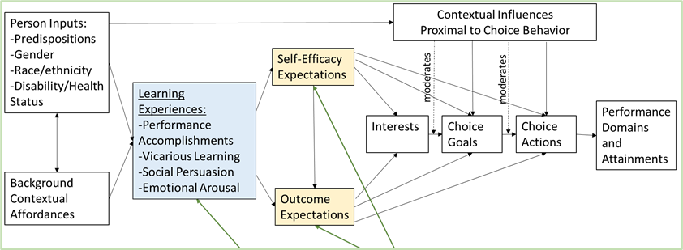
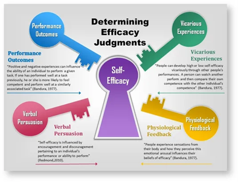
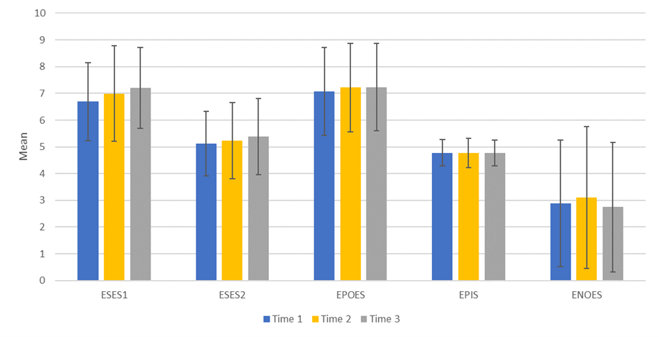

What The Idea Started From
• During the global COVID-19 pandemic in Spring 2020, college engineering classes shifted suddenly in teaching modality from in-person, to online instruction
• Engineering-related self-efficacy and outcome expectations may have been impacted during this period
What We Measured
Social Cognitive Career Theory
Social Cognitive Career Theory (SCCT; Lent, Brown, and Hackett, 1994; 2000),
demonstrated above describes how the social cognitions of self-efficacy and outcome expectations are related to
the development of career-related interests, choice goals, actions and performance
Overview of SCCT model (based on Lent et al. 1994)

Self-Efficacy
- An individual’s belief in their ability to plan and complete a specific task (Bandura 1977)
- Hypothesized to relate to avoiding or approaching certain career options, the quality of performance, and their persistence when faced with obstacles
Sources of Self-efficacy (https://www.simplypsychology.org/self-efficacy.html)

Outcome Expectations
Expected outcomes and anticipated consequences for engaging in a particular behavior
The Connection
- Social cognitions of self-efficacy and outcome expectations are significant predictors of choice goals and actions in STEM fields
- Social cognitions may also support engineering persistence (staying in the engineering major or continuing the engineering degree through perceived challenges)
What We Question
- How would students social cognitions be impacted by the sudden shifts in teaching instruction during Spring 2020?
What We Did
- Administered surveys at 3 time points during the during the 16-week academic spring semester of 2020
- Sample: Over 200 students in 8 engineering courses
What we found
- Engineering Self-Efficacy: Increased between time 1 and time 3 for 3 courses
- Engineering Persistence Intentions: decreased between time 1 and time 3 in one course and stayed same in all others
- Outcome expectations and motivation remained the same generally across
Figure: Trend of Mean Scores for Each Measure

Last Thoughts/Next Steps
- Students seem to have increased in their engineering confidence during the semester despite pandemic-related changes
- In future may explore how engineering related major studies may have been affected by the increased presence of science and
health career fields in mainstream media
Research Team
- Sarah Orton, Associate Professor, Civil and Environmental Engineering
ortons@missouri.edu - Rose Marra, Professor, School of Information Science & Learning Technologies
rmarra@missouri.edu - Lisa Y. Flores, Professor, Department of Educational, School & Counseling Psychology
floresly@missouri.edu - Fan Yu, PhD student, School of Information Science & Learning Technologies
fyu@mail.missouri.com - Johanna Milord, PhD student, Department of Educational, School & Counseling Psychology
milordj@mail.missouri.edu
Engineering Faculty Learning Community
This learning community is part of a NSF funded study to evaluate the effect of changes in teaching practices on student social cognitions.
Project Goals:
- To increase the participation of women in engineering through enhanced social cognitions which have been linked to career outcomes.
- To create a learning community comprised of engineering faculty to learn about social cognitive based teaching practices.
- To support faculty in designing and implementing these teaching practices.
- To assess the effectiveness of social cognitive based teaching practices on engineering students’ self-efficacy and outcome expectations.